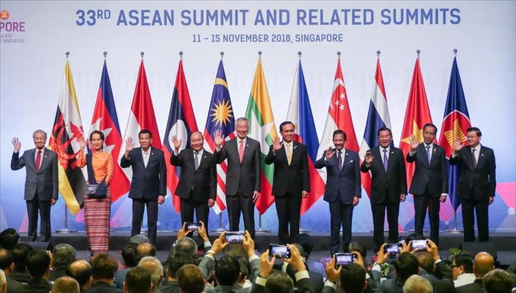

Kerjasama regional melibatkan sejumlah negara dalam satu kawasan geografis yang bekerja sama untuk mencapai tujuan bersama yang lebih luas. Kerjasama ini lebih terbatas pada wilayah tertentu, seperti Asia Tenggara atau Eropa, dan sering kali berkaitan dengan isu-isu yang relevan di kawasan tersebut, seperti keamanan, pembangunan ekonomi, atau pengelolaan sumber daya alam. Contoh kerjasama regional adalah ASEAN, yang terdiri dari negara-negara Asia Tenggara seperti Indonesia, Malaysia, dan Thailand, yang berfokus pada peningkatan integrasi ekonomi, perdamaian, dan stabilitas kawasan. Uni Eropa (EU) juga merupakan contoh kerjasama regional di Eropa, yang memungkinkan negara-negara anggotanya untuk bekerja sama dalam berbagai bidang, mulai dari perdagangan hingga kebijakan luar negeri.
Kerja sama regional yang aktif diikuti oleh Indonesia selain ASEAN adalah ASEAN Regional Forum (ARF), East Asia Summit (EAS), dan Asia Pacific Economic Cooperation (APEC).